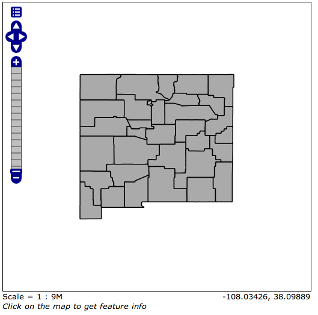
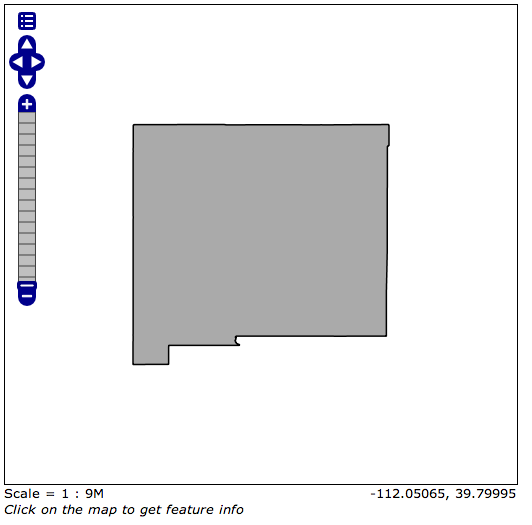
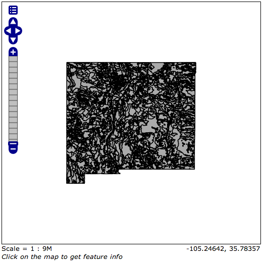

Justin Collier
01/30/14
What command would you use to list the contents of a directory on a linux system?
ls e.g. "ls -a"
What command would you use to read the "manual page" for a specific command?
man e.g. "man ls"
Counties
State
Stats
